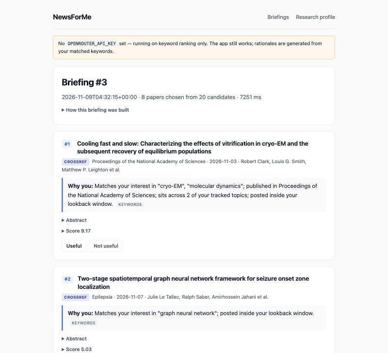
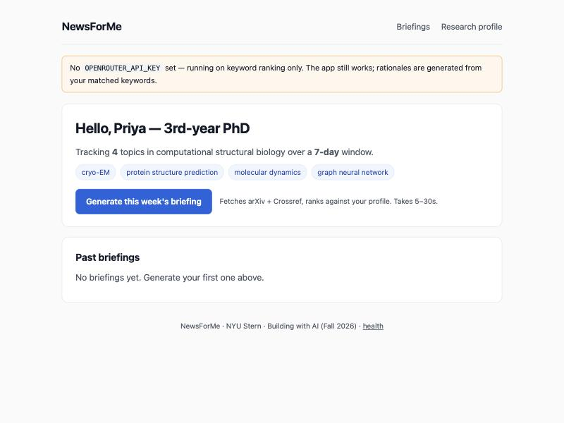

A weekly research briefing for PhD candidates: it reads the week’s new papers across arXiv and the journals, keeps the handful that actually touch your dissertation, and tells you in one line why each one is yours.
Live beta:
newsforme.fyi —
sign up with an email link, pick topics and sources, get a daily brief.
Source in beta/,
mirrored automatically from its own repository.
Build 1 prototype: still in
app/
(FastAPI + SQLite, runs at http://localhost:8000). The
screenshots below are from that prototype and are what the Build 1 log
describes; they are kept as the record of that week, not as a picture of the
current product.

A real briefing generated on 9 Nov 2026 for a test profile in computational structural biology. 8 papers kept from 20 candidates in 7.3 seconds. Every paper carries a “Why you” line and an expandable score breakdown.

The home screen. Tracked topics drive everything; one button runs the whole workflow. The orange banner is honest about running without a model key.
What changed since v1, and why.
v1 described a local app where a researcher clicks a button and gets a weekly list of papers, ranked by keyword matching over arXiv and Crossref. The working product is a daily email that arrives without anyone opening anything, built on accounts, and reading from sources the user picks themselves. Three of v1’s four stated non-goals — email delivery, accounts, and scheduling — are now the core of the product. The honest reason is that v1 had the delivery model backwards: a tool you must remember to open is one more thing to skip, and skipping it was the exact failure the product set out to fix.
Who is this for? People who are accountable for knowing what happened in their field, and who currently learn it late. The product asks each user which of three kinds of person they are, and the onboarding questions change accordingly:
The two researchers testing it:
Different career stages on purpose: a third-year is still defining a thesis area, a postdoc has a narrow fixed set of topics. Both map to the Academia persona, so the same onboarding has to serve a wide and a narrow reader.
The painful “Before”: Scholar alerts, journal table-of-contents emails and feeds all land in one inbox. They are keyword alerts, so they fire on anything containing the word. The triage gets skipped, and the paper surfaces later in a meeting instead.
The “After”: one short email at a chosen hour, every morning, written from the user’s own topics and their own chosen sources. Nothing to open, nothing to remember. Pause or unsubscribe in one click.
Sign in is a passwordless email link. There is no password to create, forget or leak. First sign-in goes to a four-step wizard, which saves nothing until the final step:
| Step | What the user does |
|---|---|
| 1. About you | Pick a persona, then answer that persona’s questions. This text is what every later suggestion is generated from. |
| 2. Topics | The backend proposes topics from the profile. The user keeps the ones they want and adds their own. Hard limit of five, enforced in the database, not just the interface. |
| 3. Sources | Per topic, a set of domains the user can remove and add to, plus a shared “all topics” list. Suggested sources are pre-filled; the user has the last word. See section 3. |
| 4. Delivery | Hour of day and timezone, defaulting to the browser’s. Finishing sends a demo brief immediately, so the first email arrives in about two minutes rather than tomorrow. |
After that the user never has to return. Settings exists for changing topics, sources, delivery time, pausing, and seeing the last ten briefings with their sent-or-failed status. The daily email itself is written and sent by a separate n8n backend that lives outside this repository.
This is the most important change in v2, and it is a relevance decision rather than a preference setting.
v1 hard-coded arXiv and Crossref, and its riskiest assumption was that keyword overlap would stand in for field relevance. Build 1 proved it does not: a structural-biology profile tracking “graph neural network” was shown papers on traffic forecasting and seizure localisation. Perfect keyword matches, useless to that researcher.
Letting the user choose their own domains attacks that problem one stage
earlier. If Roshni lists biorxiv.org and
pubmed.ncbi.nlm.nih.gov, the pool is already biomedical before
any ranking happens. The corpus is filtered by a judgement the user is far
better placed to make than a scoring function: which publications do I
actually trust in my field?
It also retires an engineering problem. v1’s open arXiv bug and the plan to add a biomedical preprint source both assumed the app decides where papers come from. It no longer does. A biomedical researcher adds biomedical sources; a fintech PM adds fintech ones. No code change per field.
Mechanics. Anything typed is normalised to a bare lowercase
domain, so https://www.Reuters.com/world/us becomes
reuters.com; anything that is not a domain is rejected. Sources
attach to one topic or to all of them. Reuters and AP are always included, so
a brief is never empty even if every chosen source goes quiet.
The new risk this creates. Relevance now depends on the user’s own list. Someone who picks three niche blogs gets a thin brief and blames the product. Choosing a domain is also not the same as being able to read it: paywalls, robots rules and script-heavy pages all stand between a chosen source and a usable summary. The riskiest assumption in v2 is that the pipeline can reliably fetch and summarise whatever domains a user names. Build 2 tests it the blunt way, by putting the real sources Roshni and Siddhi pick into the pipeline and checking what comes back.
Beta (live at newsforme.fyi): TanStack Start and React, built with Lovable, deployed on Cloudflare Workers. Supabase holds auth and four tables — profiles, topics, sources, and a read-only briefings log — with row level security so a user can only ever see their own rows. An n8n backend does the writing and sending, and is also what suggests topics and sources during onboarding.
Build 1 prototype (app/ in this repo): the
Python ranking and feed-parsing work, with 51 tests. Still the only place
where relevance scoring is written down and tested. Whether that logic moves
into the live pipeline or gets replaced by the n8n workflow is the open
question for Build 3.
Failure modes worth naming:
Mirroring the beta into a public course repository publishes the Supabase publishable key. That is how the key is meant to be used, but it means every protection sits in the database rather than in the client. So the database was audited rather than assumed.
| Check | Result |
|---|---|
| RLS enabled on every table | Pass. All five: profiles, topics, sources, briefings, sent_items. |
| Policies actually scope to the user | Pass. All twelve policies are limited to the
authenticated role and match on
auth.uid(). Nothing is granted to anonymous callers, and
no policy is a blanket USING (true). The update policies
carry both USING and WITH CHECK, which is
what stops a user reassigning a row to someone else. |
| Empirical test with the published key | Pass. Calling the REST API anonymously with the publishable key returned zero rows on all five tables. This is the check that matters: not that policies exist, but that they bite. |
| Functions that bypass RLS | Pass, reviewed individually. Six
SECURITY DEFINER warnings, all intentional.
delete_my_account and save_topics_and_sources
derive the user from auth.uid() and take no user id
argument, so they cannot act on anyone else. The unsubscribe and
resubscribe functions are callable signed-out on purpose, because an
unsubscribe link in an email has to work; they key on a 122-bit token
and return a masked address hint rather than the address. All four set
search_path = '', which closes the usual
SECURITY DEFINER hijack. |
| Unsubscribe link safety | Pass. Corporate mail scanners follow links in email and can silently unsubscribe people. The route needs a real button press, so a prefetch cannot trigger it. |
| “Leaked password protection disabled” | Not applicable. Sign-in is passwordless email links. There are no passwords to leak. |
| Problem | Fix |
|---|---|
| Crossref returned papers dated 2029, from low-quality journals, because sorting by publication date floats future-dated records to the top. | Added an explicit until-pub-date of today, switched
to relevance sorting, and reject future dates in code as well. |
| The same eLife paper appeared twice. De-duplication keyed on DOI alone, and eLife mints a separate DOI per version. | De-duplicate on DOI and normalised title; the published version now wins over the preprint. |
| A paper matching none of the tracked topics appeared in a briefing, carried in on its recency score alone. | Require at least one keyword match. Venue and recency are boosts on top of relevance, never a substitute for it. Caught by a test. |
| “Journal of Al-Farabi for Engineering Sciences” was given the prestige of Science, because venue matching was a naive substring test. | Whole-word prefix matching. Real families like Nature Methods still match; coincidental words no longer do. |
| A briefing took 77.6 seconds — unusable. | Crossref keyword queries now run concurrently and arXiv retries were cut back. Same briefing now takes 7.3 seconds. |
export.arxiv.org answers HTTP 429 to
any quoted phrase query from this machine, so arXiv contributed
nothing to the demo briefings. |
Rewrote the query to be category-only and quote-free, and did the keyword matching locally instead. Still 429 here, so the run degrades to Crossref and records the failure in the briefing trace rather than hiding it. Open issue, first job in Build 2. |
AGENTS.md) mattered — it turned a loop into a diagnosis,
which is what produced the category-only query redesign.
beta/ automatically. PRD v2 above is rewritten around the
product as it actually works. What did not get decided is
whether the Build 1 ranking logic moves into the live pipeline or is
replaced by the n8n workflow; that slips to Build 3.